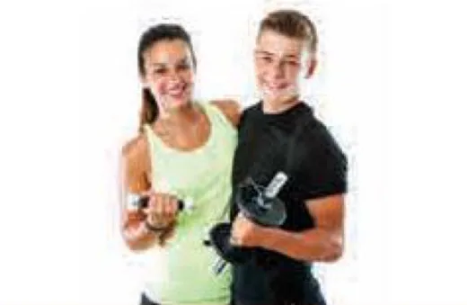
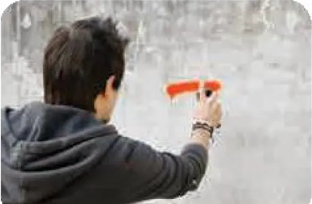

Experiencing peer pressure
Lesson 4 — Speaking
9Five stops in 45 minutes
- ❓
Warm-up
Peer pressure quiz
5 min - 📊
Tasks 1–2
Rank it · talk about it
16 min - 🧭
Task 3
What would you say?
8 min - 🗳️
Task 4
Report and vote
13 min - ✅
Wrap-up
Exit ticket
3 min
Warm-up
How well do you know peer pressure?
5 minutesPeer pressure quiz (1–3)
1. Your peers are… A. your teachers · B. people about your own age · C. your parents · D. your cousins B
2. Influence from people your age is called… A. friendship · B. negotiation · C. peer pressure · D. communication C
3. Peer pressure can be… A. only positive · B. only negative · C. positive or negative · D. never positive C
Peer pressure quiz (4–5)
4. Peer pressure can influence… A. hairstyles · B. clothing styles · C. taste in music · D. all of the above D
5. A friend encourages you to smoke. This is… A. positive peer pressure · B. negative peer pressure B
Tasks 1–2
Peer pressure in your life
16 minutesPeer pressure to…


Which example affects you most?
1️⃣ Which example of peer pressure (A–F) in 1 affects you most? Why?
2️⃣ Which one affects you the least? Why?
3️⃣ Which are examples of positive peer pressure?
🗣️ I sometimes feel pressure to … · It affects me because … · For me, … is positive because …
A affects me the most
Among these examples, A (peer pressure to get good grades at school) is affecting me the most, because all of my friends are getting very good grades at school. Sometimes, I feel ashamed because I’m not as good as they are at different subjects. Besides, my teachers and my parents keep telling me that I should try to keep up with them. It’s really stressful!
B (peer pressure to be good at sport) is affecting me the least. I’m not keen on sport, and most of my friends are not good at sport, so I don’t feel the pressure at all. I think A and D can be examples of positive peer pressure.
Task 3
What would you say?
8 minutesSituations 1–2
1. Your friend wants to skip a test, so he/she asks you to pretend that you are his/her parent(s) and write a letter to his/her teacher asking permission to be absent from school.
Example: ‘No way! I’m not lying. You should try to revise and take the test. Lies can have serious consequences and people will always find out the truth.’
2. Your friend has just got the latest smartphone. He/She makes fun of your old smartphone and says that you should buy a new one.
Situations 3–4
3. Your friend is getting good grades in English. He/She wants you to join his/her study group so that you can also improve your English.
4. Your friend is skipping classes frequently. He/She says that every teen does it sometimes, and you should do it as well.
Say it with confidence
👍 Accept helpful support
That’s a great idea!
I’d love to join.
It could help me improve.
✋ Refuse harmful pressure
No way! / No, thank you.
I don’t feel comfortable …
I’d rather … because …
Possible responses (2–4)
2. The latest smartphone I’m not ashamed of my old phone. We are students and not making any money yet. Besides, my phone is still working properly.
3. The English study group That’s a great idea! Learning with stronger students will motivate me to study harder.
4. Skipping classes No way! Skipping classes without permission is disrespectful to the teacher. Besides, I don’t want to fall behind.
Task 4
Report and vote
13 minutesVote for the best response
- ✅ a clear yes or no
- 💡 a good reason
- 🤝 a respectful tone
- 🗣️ fluent delivery
🏆 The most interesting response to situation … was … because …
Before you leave…
1. Give one example of positive peer pressure. e.g. friends inviting you to a study group · friends encouraging you to keep fit
2. How can you say no politely? No, thank you. · I don’t feel comfortable … · I’d rather … because …
3. Why is lying for a friend a bad idea? Lies can have serious consequences and people will always find out the truth.
Homework
1. Do the Speaking exercises in the workbook.
2. Write your best response to one situation in Task 3 (3–4 sentences).
3. Prepare for Lesson 5 — Listening: types of bullying.